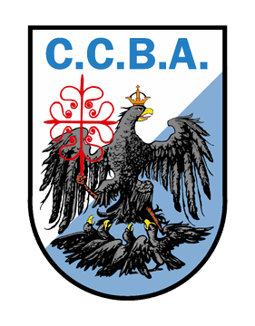

Muni360
Deportes, Colonia y COYFD en un solo acceso.

Club Ciudad de Buenos Aires · UGIDeportes, Colonia y COYFD en un solo acceso.
— = Sin registrar / sin observar · P = Presente · A = Ausente · T = Tarde · 🟢🟡🔴 = Semáforo UGI · 🧩 = Alerta individual
Tocá un deportista para cargar o ajustar sus puntuaciones del día (Escala 1 a 10).
Elegí qué habilidad técnica entrenás hoy y qué desafío tenés en el grupo para recibir la adaptación en 3 pasos.
La variable más baja se marca en rojo para reforzar en la semana.
Las alertas de asistencia se calculan desde la tercera jornada.
| Deportista | Técnica | Formación | A trabajar / Perfil | Asist. | Estado |
|---|
Respuestas y clima percibido en los cuestionarios vinculados a esta actividad y grupo.
Usá Apellido, Nombre y DNI; también podés agregar Categoría y Tira para cargar varios grupos. Tira vacía = General. Los archivos viejos siguen funcionando. Máximo 500 filas y 2 MB.
El DNI y la bitácora privada requieren permisos especiales de Dirección y no aparecen en cancha.
Las marcadas como "4C UGI" son transversales a todo el club.
Los gestos desactivados conservan sus evaluaciones históricas. Las 4 C son comunes y obligatorias.
Operaciones de mantenimiento para Coordinación y Dirección UGI.
Archiva el historial de asistencias y evaluaciones antes de iniciar el nuevo ciclo. Mantiene intacto el padrón y los DNI de los deportistas para iniciar el nuevo ciclo.
Conserva copias consultables del padrón, asistencias y evaluaciones antes de vaciar el ciclo actual. Los legajos se mantienen.
Archiva las actividades una por una y se detiene si encuentra un error. Informa cuáles se completaron.
Cada cambio de la app conserva autor, fecha y valores anteriores y nuevos. Un profe consulta sus propios cambios; Dirección consulta el historial autorizado.